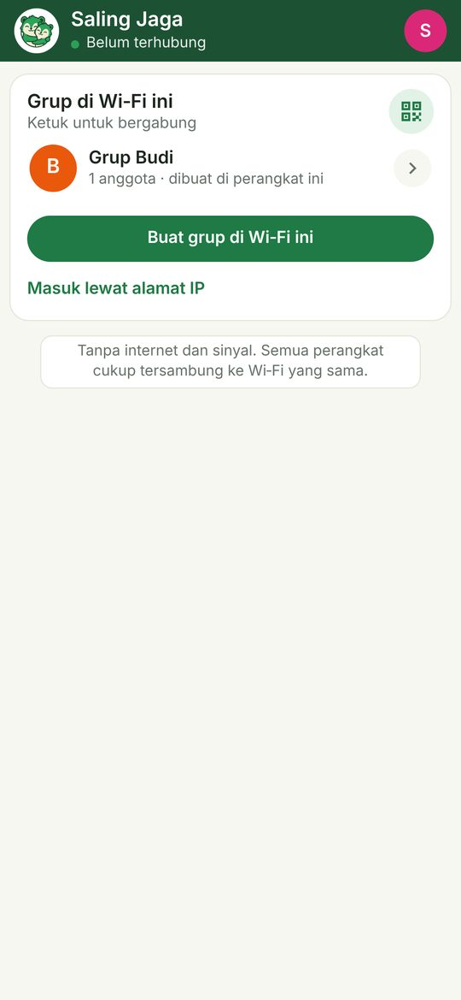
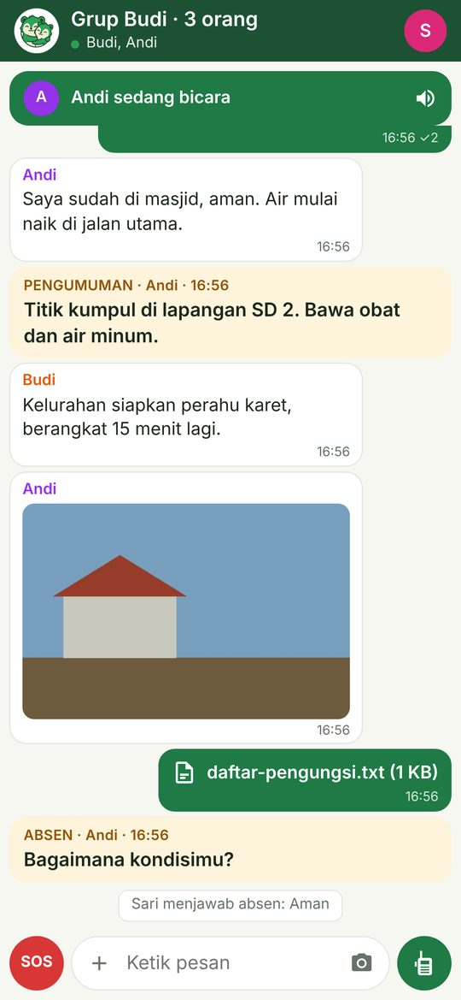
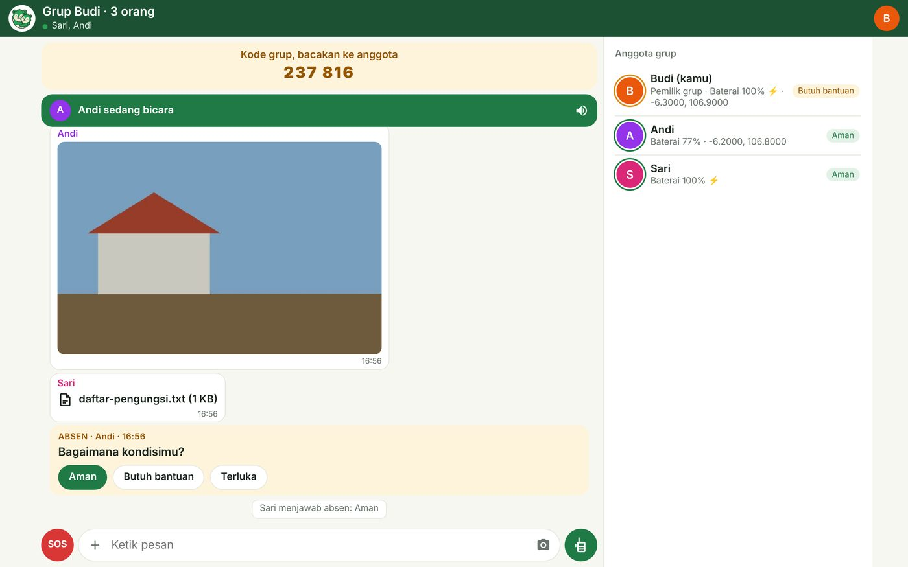

Panduan · Laptop, Mac & browser
Laptop dan iPhone ikut grup, lewat browser.
Laptop Windows, Mac, Linux, iPhone, atau tablet bisa jadi anggota grup Covatom tanpa memasang aplikasi dan tanpa internet. Cukup tersambung ke Wi‑Fi yang sama, lalu buka satu alamat di browser.
- Chat, foto, file
- Pengumuman & absen
- Status & SOS
- Dengar walkie-talkie
Pilih caranya
Ada dua jalan, hasilnya sama.
HP Android jadi server
Satu HP Android di grup membuka halaman untuk browser. Paling cepat di lapangan: tidak perlu laptop dan tidak perlu mengunduh apa pun.
Lihat langkahnyaApp laptop portable
Laptop menjalankan Covatom sendiri: bisa membuat grup atau masuk ke grup di Wi‑Fi posko, lalu HP dan laptop lain ikut lewat browser. Tanpa instalasi, cukup ekstrak dan buka.
Unduh untuk laptopCara 1 · HP Android jadi server
Buka grup untuk laptop & iPhone.
- Profil → Lanjutan → Buka untuk laptop & iPhoneTidak perlu HP lain dulu. Kalau HP belum di grup, pilih Buat Wi‑Fi dari HP ini (tanpa router), atau Pakai Wi‑Fi yang tersambung sekarang. Kalau sudah di grup, grup itu yang dibuka.
- HP menampilkan langkah untuk perangkat lainMasing-masing dengan QR dan teks.
- Sambungkan perangkat lain ke Wi‑Fi yang samaGrup Wi‑Fi Direct: scan QR Wi‑Fi di HP pembuat grup (atau ketik nama dan kata sandi Wi‑Fi yang tampil). Grup Wi‑Fi posko: sambungkan ke Wi‑Fi atau hotspot posko itu.
- Scan QR alamat, atau ketik alamatnya di browserMisalnya
http://192.168.49.1:8080. Isi nama, ketuk grupnya, dan masukkan kode 6 angka kalau diminta.
Di grup Wi‑Fi Direct, hanya HP pembuat grup yang bisa membuka halaman ini. Biarkan HP itu tetap menyala dan dekat; satu HP bisa melayani beberapa browser sekaligus.
Cara 2 · App laptop portable
Unduh sekali, jalan tanpa internet.
Java sudah ada di dalamnya, jadi tidak perlu memasang apa pun. Unduh selagi masih ada internet, lalu simpan di laptop atau flashdisk posko.
- Ekstrak zip, lalu buka CovatomBrowser terbuka sendiri di
http://localhost:8080. Jendela kecil yang ikut terbuka adalah servernya: biarkan tetap terbuka. - Isi nama, lalu buat grup atau masuk grupLaptop menampilkan grup Covatom di Wi‑Fi yang sama. Kalau membuat grup, bacakan kode 6 angka yang tampil ke anggota lain.
- Ajak perangkat lainKetuk ikon QR. HP, iPhone, atau laptop lain di Wi‑Fi yang sama scan QR itu atau mengetik alamatnya, misalnya
http://192.168.1.5:8080.
Windows: muncul “Windows protected your PC”
- Klik kanan zip → Extract All…, lalu buka folder
SalingJagaWebdan klik dua kaliSalingJagaWeb.exe. - Kalau muncul layar biru SmartScreen, klik More info → Run anyway. Ini muncul karena app belum ditandatangani sertifikat berbayar.
- Saat Windows Firewall bertanya, centang Private networks lalu Allow access. Tanpa ini, HP lain tidak bisa membuka halamannya.
Mac: “Apple could not verify…”
- Klik dua kali zip untuk mengekstrak. Pindahkan
SalingJagaWeb.appke folder Applications (boleh juga dibiarkan di Downloads). - Buka app-nya. Kalau macOS menolak, buka System Settings → Privacy & Security, gulir ke bawah, lalu klik Open Anyway dan masukkan kata sandi Mac.
- Saat Mac bertanya soal koneksi jaringan masuk, pilih Allow.
Linux
unzip saling-jaga-web-linux.zip, lalu jalankanSalingJagaWeb/bin/SalingJagaWeb.- Kalau memakai firewall (mis.
ufw), izinkan port TCP 8080 dan 8988 serta UDP 8987 di jaringan lokal.
Mac Intel, atau sudah punya Java 11+? Pakai versi jar (150 KB)
Unduh saling-jaga-web.jar, lalu jalankan java -jar saling-jaga-web.jar. Pilihan: --port 8090 untuk port lain, --en untuk bahasa Inggris, --no-browser agar browser tidak dibuka otomatis.
Di browser
Tampilannya seperti app di HP.



- Tombol merah SOSKirim tanda bahaya ke semua anggota. Ketuk lagi untuk membatalkan.
- Tombol hijauTahan untuk bicara saat kolom pesan kosong; berubah menjadi tombol kirim saat ada teks.
- Tombol +Kirim foto, kirim file, tulis pengumuman, atau ajak perangkat lain.
- Avatar di kanan atasAtur status (Aman, Butuh bantuan, Terluka), lihat anggota, atau keluar grup.
Tanya jawab
Yang perlu diketahui.
Apakah browser benar-benar jadi anggota grup?
Ya. Setiap browser tampil sebagai anggota biasa di HP Android dan iPhone, lengkap dengan status dan baterainya. Pesan antar HP tetap terenkripsi seperti di app.
Kenapa tombol bicara tidak muncul di HP saya?
Browser hanya mengizinkan mikrofon dan lokasi di halaman aman (https) atau di laptop yang menjalankan app itu sendiri. Di perangkat lain, browser tetap bisa mendengar walkie-talkie, chat, kirim foto, dan SOS. Untuk bicara, pakai app Android atau iPhone.
Halaman tidak terbuka di HP lain.
Pastikan HP itu tersambung ke Wi‑Fi yang sama (bukan data seluler), alamatnya diketik dengan http:// dan nomor port, dan firewall laptop mengizinkan koneksi. Beberapa Wi‑Fi umum memisahkan perangkat satu sama lain; pakai hotspot HP atau router posko sebagai gantinya.
Layar HP mati, apakah saya keluar dari grup?
Tidak langsung. Tempatmu di grup ditahan 5 menit. Buka lagi halamannya dan pesan yang terlewat ditampilkan kembali.
Apa yang belum bisa dari browser?
Pesan pribadi, telepon dua arah, cari keluarga, dan mode jembatan. Fitur itu tetap ada di app Android dan iPhone.

Satu laptop di posko, semua ikut terhubung.
Simpan app laptop dan APK di flashdisk posko sebelum dibutuhkan.